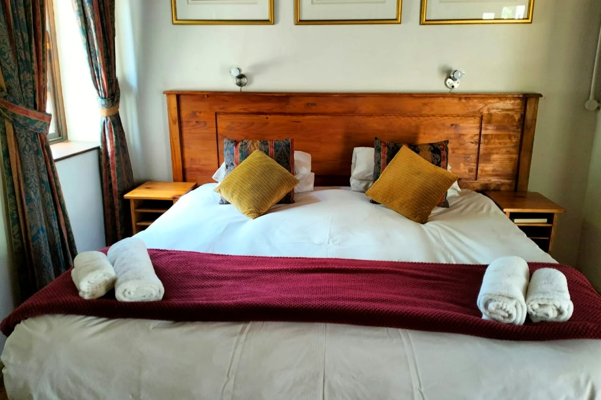

The Homestead
Two centuries of stories, and room for yours
Some places are decorated to look old. Kleinvredenburg simply is — a Cape homestead built in 1812 and declared a national monument, still doing what it has always done: taking travellers in.
Inside you'll find antique oak beds and armoires, brass door knockers worn bright by two hundred years of hands, and a garden where fountains bubble among the lavender. This is Paarl the way it used to be — and the wine route is right outside.